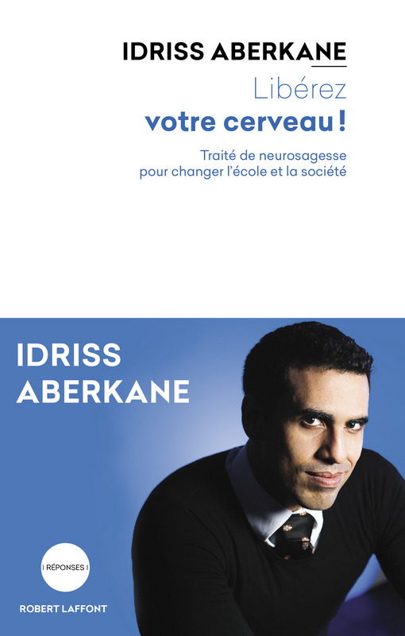

Cher François,
je vais te tutoyer parce que tu es Français et qu'en vertu de l'article 1 du code du Français qui tente tout, et du fait que je fais parti des 0,92% des bulletins exprimés qui ont voté pour toi, j'ai le droit d'exprimer ma sympathie à ton endroit et de t'envoyer cette candidature spontanée !
Poste de webmaster / états-généraux-organaïzer
Donc vois-tu, Président, il va falloir rendre ton contenu digeste car la majeure partie de nos concitoyens ne peuvent pas rester assis 3 heures 30 comme moi à regarder ton discours. Je suis tombé dessus avant le premier tour, à Nantes, il était passionant : merci ! Un jour on le montrera aux enfants à l'école ! Mais ce jour là n'arrivera que si l'on arrive à faire fusionner la politique avec les jeux vidéos !

Le livre d'Idriss Aberkane "Libérez votre cerveau" nous enseigne que la manière intuitive et optimale d'apprendre est le jeu. C'est la raison pour laquelle nous rendons l'éducation ludique et que les jeux vidéos ont autant d'addicts. J'ai écris un texte sur ma vision de l'économie sous la forme d'une Lettre ouverte à un capitaliste pour savoir si je peux aller boire une bière avec lui ou si il est tombé dans la secte de l’ultra-libéralisme et qu'il est donc de mon devoir de le sauver à l'insu de son plein gré !", j'espère que tu aimes mon humour, c'est important si on travaille ensemble. L'auto-dérision est le début de la sagesse. Donc revenons-en à nos moutons : si tu as cliqué sur mon article, tu as vu qu'il y avait une mise en forme (comme pour celui-ci) avec l'utilisation de caractères gras et de couleurs et l'insertion de liens, images et vidéos. C'est mieux présenté, au niveau des textes, que sur ton site mais ça n'est pas encore satisfaisant : la quasi-totalité des gens ne peuvent pas digérer une telle quantité d'information simultanément et surtout ils n'ont pas 2 heures devant eux pour lire le texte ! Sans compter les dogmes et le lavage de cerveau médiatique, qu'il faut passer au karcher.
Le conseiller de com' qui se cache en moi t'invite pour te rapprocher vestimentairement de toutes les couleurs qui composent notre diversité, de porter des cravates, où mieux des chemises, de tous les pays de la francophonie ! Et puis la cravate vous savez, sauf si vous aimez ça, les Français s'en fichent maintenant, ils ne se laissent plus abuser ! Votre message sera accueilli avec d'autant plus de sympathie dans le reste du monde et pour les débiles qui ne s'attachent qu'aux vêtements, ça fera le buzz, ce qui ne peut pas être mauvais tant nous partons de loin ;) Croyez-en mon expérience : pour le mariage de mon ami Renaud, j'avais demandé à ma grand-mère Cricri, triple championne du monde de patchwork, de me coudre une cravate de son invention sur un tshirt et ça avait fait son effet ! Ça a le mérite de mettre les gens dans une attitude de sourire et d'ouverture d'esprit propre à gagner leur attention et à avoir une communication qui part avec une base d'empathie. Vous avez une bonne tête comme on dit mais votre style vous rapproche trop des gens que vous combattez, il vous faut ce petit + ! On pourrait penser à un tatouage tribal sur le visage ou a un anneau dans le nez
Donc enfin, sans aller jusqu'à transformer le processus démocratique en un Mario Kart, il nous faut impérativement disposer d'un site internet/application mobile dans lequel l'utilisateur agit et répond à des questions (mini-référendum). Ensuite il faut s'organiser pour frapper en même temps. Je te donne au moins 1% des exprimés (ça arrange mes calculs) rapport au fait qu'ils n'ont pas voulu voter pour un petit candidat à cause du syndrome du winner ("Je veux pas voter pour quelqu'un qui n'a aucune chance de gagner"). Donc 1% de 36 058 813 de bulletins exprimés nous font à la louche 350 000 Français. Il faut 7 millions d'euro en France pour créer une banque, si 350 000 Français mettent 20€ chacun, on aura le capital pour créer notre propre banque. Ça me semble indispensable au point où nous en sommes de nous donner des armes efficaces et que tous les Français comprennent qu'ils ont le choix : être des capitalistes de l'argent en restant dans le système actuel ou être des capitalistes de leur temps de vie sur Terre en mettant leur argent dans une banque qui ne créera pas d'argent venu de l'espace intersidéral. Il n'y a pas de raison logique, objective que l'argent qui dort se multiplie tout seul. La contrepartie de cet "inconvénient" pour un libéral sera, je pense, balayé par l'argument que nous nous prêteront à taux zéro pour des projets immobiliers, pour les autres types de prêts, il faudra revenir comme à l'ancienne à des conseils où on décide ce qui est juste et ce qui n'est pas juste. Car la loi est manipulée et détournée. Jiddu Krisnamurti nous avait pourtant mis en garde : toute réforme engendre la nécessité de nouvelles réformes" et la France encore Adolescente a eu besoin de 40 ans d'alternance gauche-droite pour en faire l'amère expérience. Une fois élu député, je briguerai donc le poste de président de l'assemblée nationale pour mettre en application ce précepte. C'est ça non le principe, une fois qu'on est lancé en politique, faut monter le plus haut possible ? ;-)
En fait comme je n'ai aucune envie d'habiter loin de la mer, je vais laisser le combat électoral à d'autres, tout en les soutenant et militant et si tu as besoin d'un conseiller dont les amis sont : ingénieurs, boulanger, médecins, enseignants, policiers, vignerons ... comme je suis l'homme le plus riche du monde en ami, j'aurais peut être quelques bonnes idées à te faire lire ou à te dire de vive voix si tu veux venir manger à la maison les produits du jardin que je fais pousser tant bien que mal mais avec amour. Ta soif de connaissance, ta pédagogie, ton républicanisme et ton humanisme me réchauffent le cœur !
Je te fais la bise François parce que même si cette lettre n'aboutit pas j'aurais été heureux de la rédiger !
Publié le Dimanche 30 avril 2017